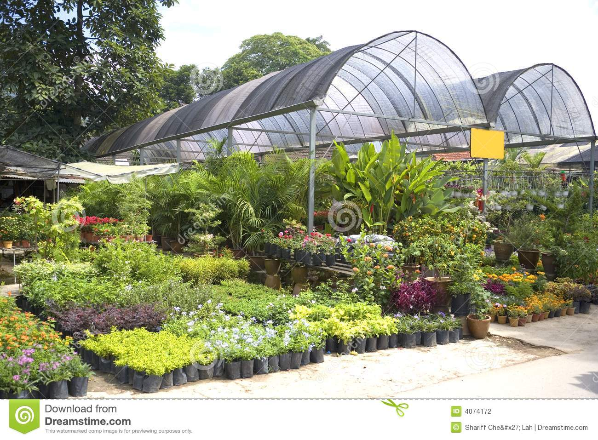

nursery, place where plants are grown for transplanting, for use as stock for budding and grafting, or for sale. Commercial nurseries produce and distribute woody and herbaceous plants, including ornamental trees, shrubs, and bulb crops. While most nursery-grown plants are ornamental, the nursery business also includes fruit plants and certain perennial vegetables used in home gardens (e.g., asparagus, rhubarb). Some nurseries are kept for the propagation of native plants for ecological restoration. Greenhouses may be used for tender plants or to keep production going year round, but nurseries most commonly consist of shaded or exposed areas outside. Plants are commonly cultivated from seed or from cuttings and are often grown inchinampa, also floa ing garden, small, stationary, artificial island built on a freshwater lake for agricultural purposes. Chinampan was the ancient name for the southwestern region of the Valley of Mexico, the region of Xochimilco, and it was there that the technique was—and is still—most widely used. It consists in building up a number of narrow islands, each averaging some 6 to 10 metres (20 to 35 feet) wide and some 100 to 200 metres (325 to 650 feet) long, using layers of vegetation, dirt, and mud. The lake provides the chinampa with moisture laden with decomposing organic wastes that irrigate and fertilize the island’s soil, supporting an intensive and highly productive form of cultivation.On the basis of plants produced Ornamental nursery Seedlings, rootstock and scion material of ornamental plants are raised and conserved for further use in such a nursery. It includes mother blocks of ornamental plants, which are used in layering, as well as, producing scion material for budding and grafting. The raised and flat beds of the nursery are occupied by seedlings of various annuals, perennials and rootstocks of ornamentals. A separate block of the nursery consists of vegetative and reproductive phase of bulb and tuber crops. Cuttings of different climbers and creepers are also planted here for rooting. An ornamental nursery also houses many indoor and outdoor potted plants. The blocks of seedlings of cut and loose flowers, seasonal, bonsai, climbers and creepers are managed individually here. Vegetable nursery Planting material like seedlings of vegetables, rooted cuttings (asparagus and sweet potato), rhizomes (ginger), tubers (potato) and bulbs (onion and garlic) are raised and conserved in such a nursery.With the objective of fitting planting stock more able to withstand stresses after outplanting, various nursery treatments have been attempted or developed and applied to nursery stock. Buse and Day (1989),[6] for instance, studied the effect of conditioning of white spruce and black spruce transplants on their morphology, physiology, and subsequent performance after outplanting. Root pruning, wrenching, and fertilization with potassium at 375 kg/ha were the treatments applied. Root pruning and wrenching modified stock in the nursery bydecreasing height, root collar diameter, shoot:root ratio, and bud size, but did not improve survival or growth after planting. Fertilization reduced root growth in black spruce but not of white spruce.
chinampa, also called floating garden, small, stationary, artificial island built on a freshwater lake for agricultural purposes. Chinampan was the ancient name for the southwestern region of the Valley of Mexico , the region of Xochimilco, and it was there that the technique was—and is still—most widely used. It consists in building up a number of narrow islands, each averaging some 6 to 10 metres (20 to 35 feet) wide and some 100 to 200 metres (325 to 650 feet) long, using layers of vegetation, dirt, and mud. The lake provides the chinampa with moisture laden with decomposing organic wastes that irrigate and fertilize the island’s soil, supporting an intensive and highly productive form of cultivation.There are a number of different types of nurseries, broadly grouped as wholesale or retail nurseries, with some overlap depending on the specific operation. Wholesale nurseries produce plants in large quantities which are sold to retail nurseries, landscapers, garden centers, and other retail outlets which then sell to the public.[3] Wholesale nurseries may be small operations that produce a specific type of plant using a small area of land, r very larger operations covering many acres. They propagate plant material or buy plants from other nurseries which may include rooted or unrooted cuttings, or small rooted plants called plugs, or field grown bare root plants, which are planted and grown to a desired size. Some wholesale nurseries produce plants on contract for others which place an order for a specific number and size of plant, while others produce a wide range of plants that are offered for sale to other nurseries and landscapers and sold as first come first served. Retail nurseries sell plants ready to be placed in the landscape or used in homes and businesses.
Nursery is a place where planting material, such as seedlings, saplings, cuttings, etc., are raised, propagated and multiplied under favourable conditions for transplanting in prepared beds. The availability of quality and true-to-type planting material is the prerequisite of successful and remunerative ornamental crop production. Setting up of a nursery is a long-term venture, and requires planning and expertise. In a nursery, plants are nurtured by providing them with optimum growing conditions to ensure germination. Nursery saves considerable time for the raising of the next crop. Among flower crops, majority of the annuals are propagated by seeds and require a nursery for raising the seedlings. Herbaceous perennials need nurseries for sowing of seeds and planting of cuttings for rooting and establishment. Woody perennials are grown from seeds for multiplying the rootstocks from cuttings, layers and through grafts to perpetuate the same genetic properties.Propagation Nurseries produce new plants from seeds, cuttings, tissue culture, grafting, or division. The plants are then grown out to a salable size and either sold to other nurseries that may continue to grow the plants out in larger containers or field grow them to desired size. nurseries may also sell plant material large enough for retail sales and thus sale directly to retail nurseries or garden centers (which rarely propagated their own plants).[4] Nurseries may produce plants for reforestation, zoos, parks, and cities. With Tree nurseries in the U.S. producing around 1.3 billion seedlings per year for reforestation.[5] Nurseries grow plants in open fields, on container fields, in tunnels or greenhouses. In open fields, nurseries grow decorative trees, shrubs and herbaceous perennials. On a containerfield nurseries grow small trees, shrubs and herbaceous plants, usually destined for sales in garden centers. These have proper ventilation, sunlight etc. Plants may be grown by seeds, but the most common method is by planting cuttings, which can be taken from shoot tips or roots.
